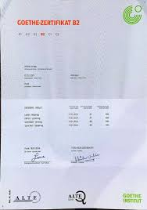

Laila M.
Bewerberin für Ausbildung als Pflegefachfrau
"Motiviert, verantwortungsbewusst und interessiert an der Arbeit mit Patienten."
Bewerberin für Ausbildung als Pflegefachfrau
Mein Name ist Laila M., ich bin 21 Jahre alt und komme aus Agadir, Marokko. Ich helfe sehr gerne Menschen und möchte deshalb einen sozialen Beruf lernen. In Marokko habe ich bereits ein Praktikum in einer Klinik gemacht und viel über die Pflege gelernt. Mein Ziel ist es, eine Ausbildung als Pflegefachfrau in Deutschland zu machen. Ich finde das deutsche Gesundheitssystem sehr professionell und möchte dort viel lernen und mich gut integrieren.

Nachweis über fortgeschrittene Deutschkenntnisse (B2-Niveau), bestanden im Jahr 2025.
Grundausbildung in Erster Hilfe, DRK / Rotes Kreuz Standard (2024).

Ausführlicher Nachweis über die praktische Arbeit und die erworbenen Kompetenzen während des Pflegepraktikums (2025).
Praktische Arbeit im Klinikalltag

Pflege und Betreuung
Zusammenarbeit im Team
Ich möchte meine Ausbildung in Deutschland machen, weil die Qualität der medizinischen Ausbildung dort weltweit bekannt ist. Ich bin sehr fleißig und möchte in einem modernen Krankenhaus arbeiten, um meine Kenntnisse zu vertiefen. Die deutsche Kultur interessiert mich sehr und ich lerne jeden Tag fleißig Deutsch, damit ich die Patienten und meine Kollegen gut verstehen kann. Ich bin bereit für eine neue Herausforderung und möchte mich langfristig in Deutschland integrieren.
Ich freue mich über eine Nachricht oder eine Einladung zu einem Gespräch.
Auf WhatsApp schreiben